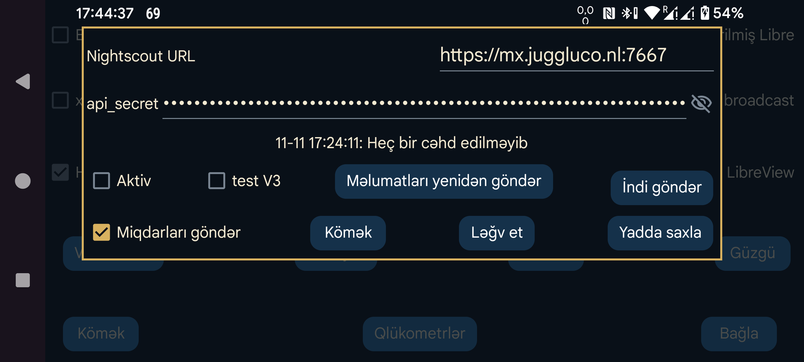

Əksər hallarda Juggluco-nun daxili veb-serverindən və ya juggluco-server proqramından da istifadə edə bilərsiniz. Yalnız Nightscout veb-səhifəsini göstərməkdən başqa funksiyası olmayan bəzi tətbiqlərə cgm-remote-monitor lazımdır. Hətta AAPS və AAPSClient də Juggluco 7.4.1-dən etibarən onun daxili veb-serveri ilə işləyə bilir.
Axın göstəriciləri daxil olduqları anda Nightscout serverinə göndərilir. Eyni vaxtda bir neçə sensor istifadə edilirsə, onların hamısından alınan göstəricilər göndərilir. Bəzi Garmin saat tətbiqləri, saat üzləri və vidcetləri göstəricilər arasında 5 dəqiqəlik fasilə olacağını nəzərdə tutur. Bir dəqiqə aralıqlarla gələn göstəricilərdən istifadə etdikdə onlar qrafikin yalnız son beşdəbirini göstərirlər. Buna görə Juggluco-nun daxili veb-serveri göstəriciləri standart olaraq 5 dəqiqəlik intervalla təqdim edir; yalnız interval=secs parametri ilə daha kiçik interval istənildikdə bu dəyişir.
URL: ünvan https://hostname:port şəklində olmalıdır. Məsələn: https://myname.herokuapp.com:6789.
Aktiv: məlumat göndərilməsini aktivləşdirir.
test V3: Nightscout-a məlumat göndərmək üçün Juggluco-nun api/v3 interfeysindən istifadə etməsini təmin edir. Əvvəllər V1 ilə məlumat qəbul etmiş Nightscout serverinə V3 ilə məlumat göndərməyin; əvvəllər V3 ilə məlumat qəbul etmiş serverə də V1 ilə göndərməyin. api_secret yerinə qeydləri (entries) və müalicə qeydlərini (treatments) göndərməyə icazəsi olan Access Token yazılmalıdır. Bu tokeni Nightscout veb-interfeysinin Admin Tools bölməsində yarada bilərsiniz. Bu seçim test adlanır, çünki başqa V3 göndəricisi yoxdur; adətən V1 istifadə edilir.
Miqdarları göndər: Miqdarları Nightscout-a müalicə qeydləri (treatments) kimi də göndərir. Seçim xanasına toxunduqda hər bir Miqdar etiketinin Nightscout-da nəyi ifadə etdiyini təyin edə biləcəyiniz dialoq açılır. Bu parametrlər Juggluco-nun sol menyu → Tənzimləmələr → Məlumat mübadiləsi → Veb-server bölməsi ilə ortaqdır. Bütün etiketlər üçün uyğun kateqoriya seçilməyincə bu seçim aktiv edilə bilməz. Sonradan yeni etiket əlavə etdikdə ona uyğun davranışı da ayrıca müəyyənləşdirməlisiniz. Nightscout-dakı xəta səbəbindən əvvəlki vaxtlara aid qeydlərin əlavə edilməsi və ya silinməsi yalnız daha yeni vaxtlı məlumat göndərildikdən sonra görünə bilər. Buna görə Miqdarları Nightscout-a daha seyrək göndərmək daha münasibdir. Hazırda bu, istifadəçi ekranı söndürəndə və ya Juggluco-dan başqa tətbiqə keçəndə baş verir.
Məlumatları yenidən göndər: bütün məlumatları Nightscout serverinə təkrar göndərir.
İndi göndər: normalda sensor və ya Güzgü bağlantısı vasitəsilə daxil olan məlumat dərhal göndərilir. Əvvəlki göndərmə cəhdi alınmayıbsa, bu düyməni basın.
Juggluco-nun Wear OS üçün 4.15.0 və sonrakı versiyaları da qlükoza göstəricilərini Nightscout-a göndərə bilir. Bununla belə, demək olar ki, həmişə məlumatları telefondakı və ya planşetdəki Juggluco, yaxud kompüterdəki Juggluco serveri vasitəsilə göndərmək daha yaxşıdır. Xüsusən Nightscout serveri ilə əlaqə yaratmaq mümkün olmadıqda saatın batareyası sürətlə boşala bilər. Etibarlı bağlantı yoxdursa, Aktiv seçimini söndürün.
İki xəta bildirişi tez-tez anlaşılmazlıq yaradır.
upload failure: yazısından sonra iki nöqtədən başqa heç nə yoxdursa, ehtimal olunan səbəblər bunlardır:
upload failure: java.io.FileNotFoundException: NIGHTSCOUTURL/api/v1/entries
Burada NIGHTSCOUTURL — «Nightscout URL» sahəsinə daxil edilmiş server ünvanıdır.
Bu xəta aşağıdakı səbəblərdən biri ilə bağlı ola bilər:
api_secret yanlışdır;NIGHTSCOUTURL ünvanında olmamalı əlavə yol var. Məsələn, düzgün URL https://ahost.org:8887 olduğu halda https://ahost.org:8887/extra daxil edilib.